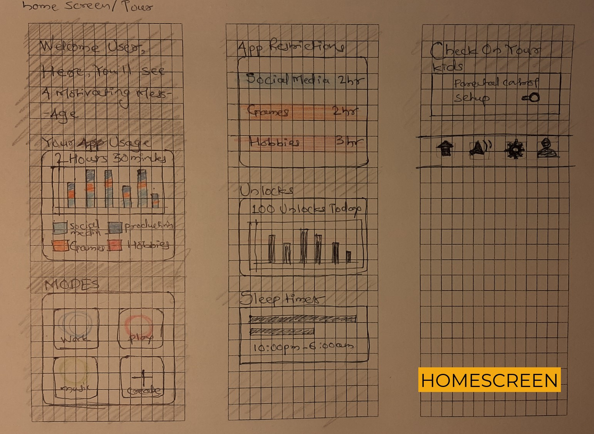

Digital Discipline
Curb the procrastinator in you!
How do we help people get disciplined digitally? Make their day distraction free and keep them motivated?
Problem Statement
Almost everyone carries a smartphone these days, when used as a tool, it increases our productivity and makes our lives easier, we can keep work organized, keep us in touch with our loved ones. However with the rise of social media and our constant need to be updated with what's happening around the world, adversely affects our productivity and most often than not we become addicted to our phones and the social media apps keep distracting us
With hopes of finding specifics of this issue and finding the right demographic for the application I started having virtual interviews to understand what the daily habits of the users are and what effect does smartphones have on their life
User Interviews and Empathy Maps
Based on the initial interviews I had with 8 users, I created three empathy maps that represent the users that have similar problems in their daily routine
Users overindulge in their phones
Multiple users over-indulged in social media, they feel the constant urge to check their phones for notifications, and they feel the need to check every notification and get distracted by it
They certainly try to avoid the overindulgence but they end up falling off the wagon after a few weeks as the motivation fades away
They constantly get notified of activities on social media applications, distracts them from their work
They often check certain apps like YouTube and Instagram and night and causes them to lose sleep, affecting the next day
They would definitely like to have control on their kids' devices
Sketching and Low Fidelity Prototyping
With the Pain points isolated, started the sketching ideas and wireframing screens for features that would help solve them
On Boarding Screen
Initial Iteration of the on boarding screens

Home Screen/Dashboard
Main Home Screen after log in
Leaderboard + Friends
User can see the global leaderboard and see how they rank among their friends and message their friends which will notify them only if they're not busy
Modes and Encourage
User can edit modes and add apps to the modes. Users can also send encouragement messages when they are being disciplined themselves and the messages will only notify their friends who are using social media apps or games
After finalizing a the flows and the screen after deciding colours and icons, moved on to the high fidelity prototype
Figma Prototype
Highlighted Features for user testing
Global Leaderboard
Motivate users to compete to top the Leaderboard by following digital discipline
Global LeaderboardFriends Leaderboard
Friends
Send Encouraging push notifications to friends who are using social media or gaming apps at the moment
Quiet chat with friends and the messages will be notified to them only when they are available i.e. when outside work mode
Encourage Your FriendsEncouragement Complete NotificationChat with Friends, non-distracting way
Rewards
Reward disciplined users with coupons and deals, for local businesses that they can claim which will reinforce their habits and provide additional motivation
Rewards Navigation from profileClaim Rewards
Usability Testing
To understand if the application is easily usable, conducted 8 usability tests using maze which made usability testing quite easy
Tested with tasks that the user would normally perform on the application as well as their ability to identify the navigation to the new features like sending the encouragement and accessing the Quiet-chat
Creating Missions using Maze
Task completion rate was 100%
Task Time: Slower than expected in a few tasks, overall satisfactory
Errors: Confusion observed in one of the tasks of setting up parental control
Expectation: Users expected the task of sending encouragement to be easier
Likeliness to use: Only 5 out of 8 testers said they are likely to use this application
All the tasks were performed by the users, Although some users did take longer than expected to complete a few tasks, for example, finding a way to create a customized mode
What did the users say?
"Having the app sync from my calendar is pretty handy, as I don't have to go in and set my modes for every appointment I have"
"The way it gives me the ability to collectively manage my use for a category of apps is useful"
"If I could get a free coffee, just for not wasting time on my phone, I'd like that!"
"This is definitely something that people would use just to get offers around"
"The reward feature can be explored more in alignment with the parental control, if the kid avoids excessive usage parent could get notified to treat them for being a good kid"
"The red in the colour palette gives a feeling of warning and better colour selection can be made"
Further Enhancements and future scope
Custom Designed Iconography and better suited colour palette can be selected to make the application more appealing
A form of virtual currency and awards can be given to the users who follow their discipline, that will trigger the dopamine release and keep users motivated
Multiple users, when asked, had no problem making a brief overview of their daily usage visible to their "friends", given that they have the control over what is shared
The Quiet-chat feature feels redundant as the application already has the ability to block notifications with other messaging apps while the user is busy
Important Learnings from the Process
Initial User Interviews are the key to identify the under-served areas in the existing market, and isolate users' needs
Prioritizing Pain Points for the users, and addressing them one at a time, and then optimizing the flow for the complete application, is efficient
Usability testing provided concrete opinions of the users and helped in finding and optimizing most useful areas of the application for the user and further efforts can be put into improving those